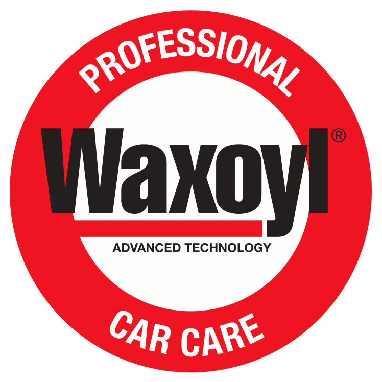

01
Usuwanie osadów
Pomaga usuwać żywicę, smołę, rdzę nalotową, pozostałości owadów i inne zanieczyszczenia.

← Powrót do produktów Zapytaj o produkt ↗Plastyczna glinka do usuwania osadów i zanieczyszczeń z gładkich powierzchni.
Waxoyl Clay Bar to plastyczna glinka czyszcząca przeznaczona do usuwania zanieczyszczeń, które pozostają na powierzchni po zwykłym myciu. Pomaga oczyścić lakier, szkło i powierzchnie chromowane z osadów utrudniających dalszą pielęgnację.
Waxoyl Clay Bar to plastyczna glinka czyszcząca przeznaczona do usuwania zanieczyszczeń, które pozostają na powierzchni po zwykłym myciu. Pomaga oczyścić lakier, szkło i powierzchnie chromowane z osadów utrudniających dalszą pielęgnację.
Pomaga usuwać żywicę, smołę, rdzę nalotową, pozostałości owadów i inne zanieczyszczenia.
Może być stosowana na lakierze, szkle i powierzchniach chromowanych.
Łatwo dopasowuje się do kształtu obrabianej powierzchni.
Plastyczność zwiększa komfort użytkowania i ogranicza ryzyko zarysowania przy prawidłowej pracy.
Nie używać glinki na sucho. Katalog producenta wskazuje stosowanie Magic Clay wyłącznie ze środkiem poślizgowym / Clay Lube.
Wartości i opisy podano na podstawie dostępnych materiałów produktowych. Przed zastosowaniem należy sprawdzić aktualną etykietę, kartę techniczną i kartę charakterystyki.
Potrzebujesz aktualnej karty technicznej (TDS), karty charakterystyki (SDS) lub informacji o dostępnych opakowaniach? Skontaktuj się z Waxoyl Polska — przygotujemy właściwe materiały dla wybranego produktu.
Skontaktuj się z Waxoyl Polska. Pomożemy dobrać rozwiązanie do rodzaju powierzchni, zastosowania i technologii pracy.